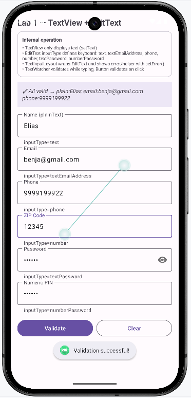
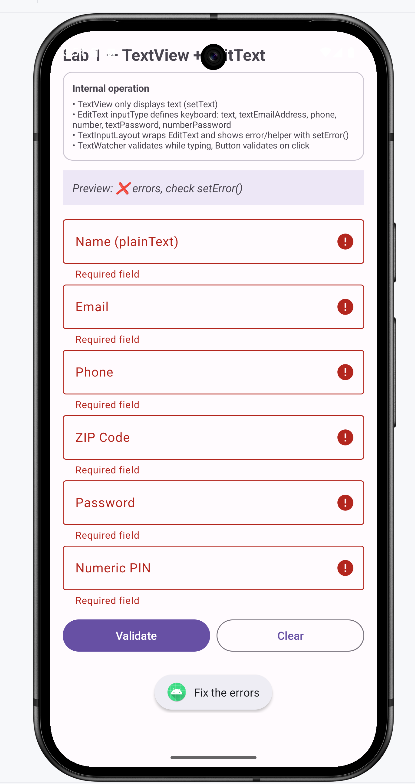

Instrucciones Detalladas de Vistas y Capturas
Cada tarjeta en color ROJO describe con precisión: qué archivo XML abrir, qué clase Java/Kotlin corresponde, qué acción realizar en el emulador para obtener la imagen, y el nombre exacto de archivo. Al guardar la imagen en tutorial/assets/images/ aparecerá automáticamente y podrás borrar el bloque rojo.
Catálogo Detallado por Módulo & Laboratorio
📄 Vista XML: res/layout/activity_main.xml
☕ Clase: MainActivity.java
🎯 Capturar: Emulador con pantalla de Login, teclado de email desplegado y campos de usuario/password visibles.
💾 Archivo: assets/images/auth-login.png
auth-login.png

📄 Vista XML: res/layout/activity_register.xml
☕ Clase: RegisterActivity.java
🎯 Capturar: Emulador en formulario de registro mostrando los campos de nombre, email, password y confirmación.
💾 Archivo: assets/images/auth-register.png
auth-register.png

📄 Vista XML: res/layout/activity_home.xml
☕ Clase: HomeActivity.java
🎯 Capturar: Pantalla HomeActivity con la cuadrícula de tarjetas de laboratorios y header de bienvenida.
💾 Archivo: assets/images/home-hub.png
home-hub.png

📄 Vista XML: res/layout/activity_text_inputs.xml
☕ Clase: TextInputsActivity.java
🎯 Capturar: Android Studio pestaña Split mostrando el diseño con los 6 campos TextInputLayout.
💾 Archivo: assets/images/lab-textinputs-preview.png
lab-textinputs-preview.png

📄 Vista XML: res/layout/activity_text_inputs.xml
☕ Clase: TextInputsActivity.java
🎯 Capturar: Emulador con todos los campos completados correctamente y el TextView morado mostrando "✓ Todo válido".
💾 Archivo: assets/images/lab-textinputs-emulator.png
lab-textinputs-emulator.png

📄 Vista XML: activity_text_inputs.xml
☕ Clase: TextInputsActivity.java
🎯 Capturar: Dejar un campo vacío o email incorrecto y presionar Validar para que se marque el campo en rojo con el error de validación.
💾 Archivo: assets/images/lab-textinputs-error.png
lab-textinputs-error.png

📄 Vista XML: res/layout/activity_date_time.xml
☕ Clase: DateTimeActivity.java
🎯 Capturar: Pantalla inicial de DateTimeActivity con los dos TextViews de estado en verde y azul claro.
💾 Archivo: assets/images/lab-datetime-preview.png
lab-datetime-preview.png

📄 Vista XML: res/layout/activity_date_time.xml
☕ Clase: DateTimeActivity.java
🎯 Capturar: Presionar "Seleccionar fecha" en el emulador y capturar con el calendario modal desplegado.
💾 Archivo: assets/images/lab-datetime-dialog.png
lab-datetime-dialog.png

📄 Vista XML: res/layout/activity_buttons.xml
☕ Clase: ButtonsActivity.java
🎯 Capturar: Emulador con el botón normal presionado y el TextView reflejando "Botón presionado".
💾 Archivo: assets/images/lab-buttons-preview.png
lab-buttons-preview.png

📄 Vista XML: res/layout/activity_buttons.xml
☕ Clase: ButtonsActivity.java
🎯 Capturar: Marcar el Chip "Kotlin" o "Android" y verificar que el texto inferior se actualiza.
💾 Archivo: assets/images/lab-buttons-chip.png
lab-buttons-chip.png

📄 Vista XML: res/layout/activity_selection.xml
☕ Clase: SelectionActivity.java
🎯 Capturar: CheckBox marcado, RadioButton seleccionado y Switches activados con el TextView de resumen abajo.
💾 Archivo: assets/images/lab-selection-result.png
lab-selection-result.png

📄 Vista XML: res/layout/activity_feedback.xml
☕ Clase: FeedbackActivity.java
🎯 Capturar: ProgressBar horizontal al 70%, spinner circular visible y RatingBar con 4 estrellas seleccionadas.
💾 Archivo: assets/images/lab-feedback-progress.png
lab-feedback-progress.png

📄 Vista XML: res/layout/activity_web_view.xml
☕ Clase: WebViewActivity.java
🎯 Capturar: WebView con developer.android.com o página web renderizada con barra de progreso completa.
💾 Archivo: assets/images/lab-webview-loaded.png
lab-webview-loaded.png

📄 Vista XML: res/layout/activity_dialog.xml
☕ Clase: DialogActivity.java
🎯 Capturar: Presionar "Mostrar Alerta" para abrir el MaterialAlertDialog modal de confirmación con botones Aceptar/Cancelar.
💾 Archivo: assets/images/lab-dialog-toast.png
lab-dialog-toast.png

📄 Vista XML: res/layout/activity_layouts.xml
☕ Clase: LayoutsActivity.java
🎯 Capturar: Comparativa visual de LinearLayout, FrameLayout y ConstraintLayout organizados en bloques de colores.
💾 Archivo: assets/images/lab-layouts-preview.png
lab-layouts-preview.png

📄 Vista XML: res/layout/activity_scroll.xml
☕ Clase: ScrollActivity.java
🎯 Capturar: Vista con desplazamiento vertical mostrando scrollbar activo y contenido extenso.
💾 Archivo: assets/images/lab-scroll-preview.png
lab-scroll-preview.png

📄 Vista XML: res/layout/activity_recycler.xml + item_contact.xml
☕ Clase: RecyclerActivity.java + ContactAdapter.java
🎯 Capturar: Lista dinámica de tarjetas de contactos con botón de favorito y filtro de chips.
💾 Archivo: assets/images/lab-recycler-preview.png
lab-recycler-preview.png

📄 Herramienta: Android Studio Logcat Tab
🔍 Filtro: tag:SANDBOX_* o package:mine
🎯 Capturar: Pestaña de Logcat mostrando logs coloreados (Verbose, Debug, Info, Warn, Error).
💾 Archivo: assets/images/debug-logcat.png
debug-logcat.png